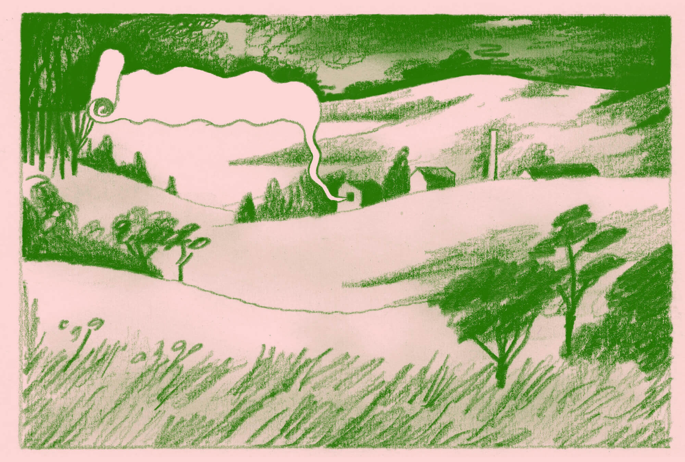
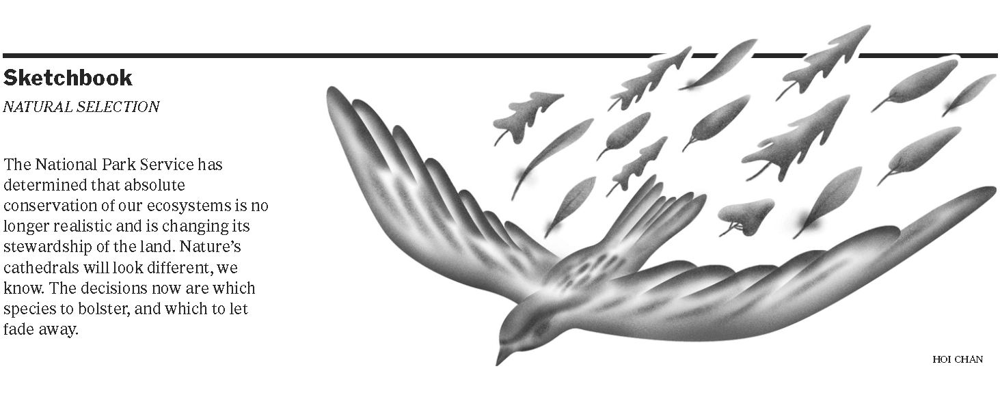

Currently working with the design directors of the print newspaper to refresh its robust design system. While the long-term project unfolds, tackling day-to-day design and art direction.
Last updated June 2021

Art Direction: Times Insider
Times Insider delivers behind-the-scenes insights into how Times journalism comes together. Each day, a new installment can be found online and on page 2 of the print newspaper.

Antoine CosséMikki Janower

Mikki JanowerHolly Stapleton
Art Direction: Sketchbook
On Saturdays and Sundays, the Times prints an installment of 'Sketchbook', a standalone, black and white art spot on page 3. Sketchbook asks illustrators and artists to respond to current events in a visually compelling way.



News Design

Obituary: June NewtonWords by Penelope Green
April 21, 2021
April 21, 2021